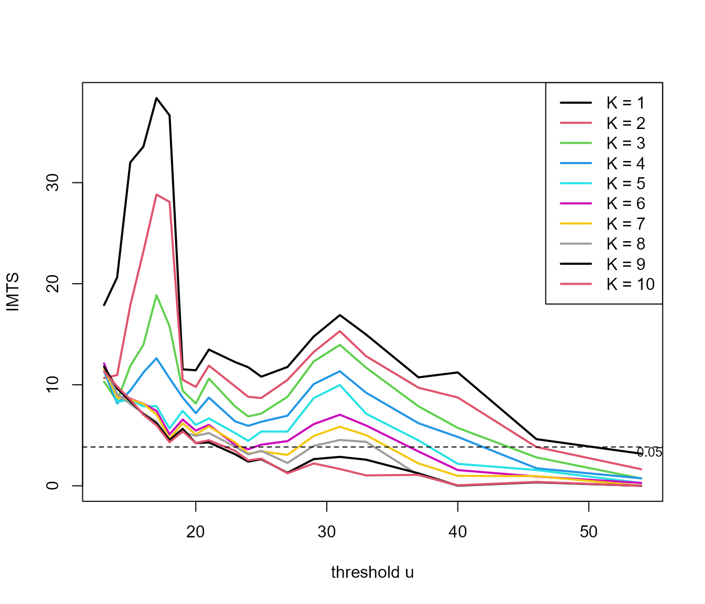

Introducing exdex: Estimation of the Extremal Index
Paul Northrop
2026-01-04
Source:vignettes/exdex-vignette.Rmd
exdex-vignette.RmdThe extremal value index \(\theta\) is a measure of the extent of clustering in the extremes of a stationary process, representing the reciprocal of the mean cluster size.
The main purpose of the exdex package is to implement the semiparametric maxima estimators developed in Northrop (2015) and Berghaus and Bücher (2018). A feature of these works is the use of sliding block maxima, that is, the use of all blocks of consecutive values, rather than maxima over disjoint block of values. This improves efficiency of estimation, albeit at the cost of complicating theoretical work. Also provided are functions to estimate \(\theta\) using two threshold-based methods: the \(K\)-gaps estimator (Süveges and Davison (2010)) and the iterated weighted least squares estimator (Süveges (2007)).
Semiparametric maxima estimators
These estimators are based on the approximate relation \(G(u_b) = F(u_b)^{b\theta}\) between the marginal distribution function \(F\) of the process and the distribution function \(G\) of the block maximum \(M\) of \(b\) consecutive variables, which applies provided that \(b\) and \(u_b\) are large. If \(G = F^{b\theta}\) then \(Y = -b\log F(M)\) has an exponential(\(\theta\)) distribution and \(Z = b(1 - F(M))\) is a multiple \(b\) of a beta(\(1, b\theta\)) distribution.
Let \((M_1, \ldots, M_k)\) be a sample of block maxima of \(b\) consecutive values. The marginal distribution function \(F\) is not known so we estimate it using the empirical distribution function \(\hat{F}\) set \[ \quad Y_i = -b \log \hat{F}(M_i), \quad Z_i = b(1 - \hat{F}(M_i)), \quad i = 1, \ldots, k \] and define the estimators \[ \hat{\theta}_N = \left( \frac{1}{k} \sum_{i=1}^k Y_i \right)^{-1} \quad \hat{\theta}_{BB} = \left( \frac{1}{k} \sum_{i=1}^k Z_i \right)^{-1}. \] These two estimators are equivalent asymptotically. The former is the estimator proposed in Northrop (2015). Berghaus and Bücher (2018) derived asymptotic properties of the latter, because it is more amenable to mathematical analysis.
The function spm provides three estimators, estimated
using both sliding and disjoint block maxima and four types of
bias-adjustment. The estimators are \(\hat{\theta}_N, \hat{\theta}_{BB}\) and
\(\hat{\theta}_{BB}-1/b\). The latter
is motivated by the observation that E\((Z) =
(\theta + 1/b)^{-1} < \theta^{-1}\) and therefore the
subtraction of \(1 / b\) provides
further bias-adjustment. In fact empirical results indicate that \(\hat{\theta}_N\) and \(\hat{\theta}_{BB} - 1/b\) produce similar
estimates.
Newlyn sea surges
We provide an illustration of the spm function using the
newlyn data, a time series of 2894 maximum seas surges
measured at Newlyn, Cornwall, UK over the period 1971-1976. We use a
block size \(b = 20\). We explain in Block size selection how this value was chosen.
library(exdex)
theta <- spm(newlyn, 20)
# Estimates: BB2018b is BB2018 - 1/b
theta
#>
#> Call:
#> spm(data = newlyn, b = 20)
#>
#> Estimates of the extremal index theta:
#> N2015 BB2018 BB2018b
#> sliding 0.2392 0.3078 0.2578
#> disjoint 0.2350 0.3042 0.2542
# Estimates, SEs and bias-adjustments
summary(theta)
#>
#> Call:
#> spm(data = newlyn, b = 20)
#>
#> Estimate Std. Error Bias adj.
#> N2015, sliding 0.2392 0.01990 0.003317
#> BB2018, sliding 0.3078 0.01642 0.003026
#> BB2018b, sliding 0.2578 0.01642 0.053030
#> N2015, disjoint 0.2350 0.02222 0.003726
#> BB2018, disjoint 0.3042 0.02101 0.003571
#> BB2018b, disjoint 0.2542 0.02101 0.053570There is a confint method for calculating confidence
intervals using objects returned from spm. The
likelihood-based intervals are based on an adjustment (performed by the
chandwich package Northrop and
Chandler (2021)) of the naive (pseudo-)loglikelihood so that the
curvature of the adjusted loglikelihood agrees with the estimated
standard errors.
# Sliding maxima, symmetric intervals
conf <- confint(theta)
# Sliding maxima, likelihood-based intervals
conf <- confint(theta, interval_type = "lik")
plot(conf)
For this small block size of \(b = 20\) there is an appreciable difference between the inferences from the N2015 and BB2018 estimates.
S&P 500 index
We also consider a dataset (sp500) that is similar to
one analysed in Berghaus and Bücher
(2018): daily log returns of the S&P 500 index, from 3rd
January 1990 to 9th October 2018. We use a block size \(b = 225\), which is similar to that chosen
by Berghaus and Bücher (2018).
theta <- spm(sp500, 225)
summary(theta)
#>
#> Call:
#> spm(data = sp500, b = 225)
#>
#> Estimate Std. Error Bias adj.
#> N2015, sliding 0.2454 0.04075 0.01451
#> BB2018, sliding 0.2497 0.04069 0.01452
#> BB2018b, sliding 0.2453 0.04069 0.01897
#> N2015, disjoint 0.2402 0.04150 0.01472
#> BB2018, disjoint 0.2446 0.04152 0.01475
#> BB2018b, disjoint 0.2401 0.04152 0.01920
conf <- confint(theta, interval_type = "lik")
plot(conf)For this large block size there is very little difference between the inferences produce by the three estimators.
Block size selection
An informal way to choose the value of \(b\) is plots estimates of \(\theta\) over a range of values of \(b\) and to select the smallest \(b\) above which these estimates appear to
be constant with respect to \(b\),
taking into account sampling variability. The function
choose_b, and its associated plot method, does this,
quantifying sampling variability using pointwise confidence intervals.
The plot method allows us to select one of 3 estimators and choose
whether to use sliding or disjoint block maxima. The default is to plot
the estimates using the Northrop (2015)
estimator applied to sliding maxima.
For the newlyn data we obtain the following plot.
# Plot like the top left of Northrop (2015)
# We remove the 14 values because 2880 has lots of factors
b_vals <- c(2,3,4,5,6,8,9,10,12,15,16,18,20,24,30,32,36,40,45,48,54,60)
res <- choose_b(newlyn[1:2880], b_vals)
# Some b are too small for the sampling variance of the sliding blocks
# estimator to be estimated
plot(res, ylim = c(0, 1))
This plots suggests that \(b = 20\)
is a reasonable block size to choose. Indeed the point estimates varies
smoothly with \(b\) and varies little
for \(b \geq 20\). The confidence
intervals tend to widen as \(b\)
increases, although the method for estimating these intervals is
somewhat sensitive to block size owing to its use of disjoint block
maxima. See the help file for spm and Berghaus and Bücher (2018) for further
information. Note that for very small values of \(b\) it may not be possible to estimate the
confidence intervals, hence the missing intervals in this plot.
For the sp500 data we obtain the following plot.
b_vals <- c(10, seq(from = 25, to = 350, by = 25), 357)
res500 <- choose_b(sp500, b_vals)
plot(res500, ylim = c(0, 1))The estimates of \(\theta\)
stabilise less quickly than for the newlyn data but \(b = 225\) seems to be reasonable
choice.
Threshold-based estimators
These estimators are based on the distribution of the times at which observations exceed some high threshold \(u\). They are based on Ferro and Segers (2003), which uses a limiting (\(u \rightarrow \infty\)) mixture model to represent the distribution of within- and between-cluster inter-exceedance times. Under the model with probability \(\theta\) an inter-exceedance time has an exponential distribution with mean \(1/\theta\) (a between-cluster time) and otherwise the inter-exceedance time is, in theory, zero (a within-cluster time).
In practice, zero inter-exceedance times are impossible and some adjustment is advisable in order to mitigate the effects of the model not fitting well for small inter-exceedance times. The following estimators take different approaches to solving this problem.
\(K\)-gaps
Süveges and Davison (2010) to introduce an extra tuning parameter, run parameter \(K\) that truncates inter-exceedance times, with the effect that any inter-exceedance time that is \(\leq K\) is set to zero. Provided that a suitable value of \(K\) is chosen \(\theta\) may be estimated under the mixture model using maximum likelihood estimation. The following code does this using a particular threshold and \(K = 1\).
u <- quantile(sp500, probs = 0.60)
theta <- kgaps(sp500, u, k = 1)
summary(theta)
#>
#> Call:
#> kgaps(data = sp500, u = u, k = 1)
#>
#> Estimate Std. Error
#> theta 0.6953 0.007234Süveges and Davison (2010) propose a diagnostic test, an information matrix text (IMT), to inform the choice of \((u, K)\). The test is based on a statistics that compares the Fisher information for \(\theta\) to the variance of the score statistic, both evaluated at the estimate \(\hat{\theta}\), because these two quantities are equal for a well-specified regular model. The following code performs this test, using a test of size \(\alpha = 0.05\), for a range of values of \(u\) and \(K\) and produces graphical summary containing a horizontal line to indicator the critical value of the test.
u <- quantile(sp500, probs = seq(0.1, 0.9, by = 0.1))
imt_theta <- choose_uk(sp500, u = u, k = 1:5)
plot(imt_theta, uprob = TRUE, alpha = 0.05)
Large values of the IMT statistic suggest a poor choice of \((u, K)\). Diagnostic plots like this are never clear cut but the fact that for \(K = 1\) the IMT statistics drops below the critical value at around the sample 60% quantile suggests the combination of \(u\) and \(K\) that we used above.
Multiple time series and missing values
The cheeseboro dataset contains hourly maximum wind
gusts recorded at the Cheeseboro weather station near Thousand Oaks,
Southern California, USA during the month of January over the period
2000-2009. Therefore, these data contain 10 time series that we shall
consider to be approximately independent of each other. These data also
contain several missing values.
summary(cheeseboro)
#> 2000 2001 2002 2003
#> Min. : 0.00 Min. : 3.00 Min. : 2.00 Min. : 1.00
#> 1st Qu.: 8.00 1st Qu.:10.00 1st Qu.: 8.00 1st Qu.: 7.00
#> Median :11.00 Median :15.00 Median :12.00 Median :12.00
#> Mean :13.59 Mean :18.88 Mean :14.68 Mean :16.47
#> 3rd Qu.:16.00 3rd Qu.:25.00 3rd Qu.:19.00 3rd Qu.:20.00
#> Max. :63.00 Max. :69.00 Max. :62.00 Max. :92.00
#> NA's :12 NA's :9 NA's :14 NA's :4
#> 2004 2005 2006 2007 2008
#> Min. : 2.00 Min. : 0.00 Min. : 2.00 Min. : 1.0 Min. : 2.00
#> 1st Qu.: 9.00 1st Qu.: 8.00 1st Qu.: 9.00 1st Qu.: 9.0 1st Qu.:10.00
#> Median :13.00 Median :13.00 Median :14.00 Median :15.0 Median :15.00
#> Mean :15.61 Mean :16.23 Mean :18.83 Mean :18.7 Mean :17.47
#> 3rd Qu.:20.00 3rd Qu.:22.00 3rd Qu.:25.00 3rd Qu.:27.0 3rd Qu.:23.00
#> Max. :53.00 Max. :51.00 Max. :71.00 Max. :60.0 Max. :53.00
#> NA's :1 NA's :2
#> 2009
#> Min. : 0.00
#> 1st Qu.: 9.00
#> Median :15.00
#> Mean :18.86
#> 3rd Qu.:27.00
#> Max. :62.00
#> Inside kgaps() these data are divided further into
sequences of non-missing values with each sequence stored in a separate
column of a matrix. The \(K\)-gaps
log-likelihood is constructed as a sum of contributions from
columns.
probs <- c(seq(0.5, 0.98, by = 0.025), 0.99)
u <- quantile(cheeseboro, probs = probs, na.rm = TRUE)
imt_theta <- choose_uk(cheeseboro, u, k = 1:10)
plot(imt_theta, uprob = FALSE, lwd = 2)
For these data the diagnostic graphic for choosing \((u, K)\) is perhaps less clear than for the
sp500 data. As an example, we use \(u = 45\) mph and \(K = 3\) below.
\(D\)-gaps
From version 1.2.1 of exdex the estimator of \(\theta\) developed by Holesovsky and Fusek (2020) is available, which
involves a censoring parameter \(D\).
This estimator is similar to the \(K\)-gaps estimator, but the treatment of
small inter-exceedance times is different. Threshold inter-exceedances
times that are not larger than units are left-censored and contribute to
a log-likelihood only the information that they are \(\leq D\). The function dgaps
calculates maximum likelihood estimates of \(\theta\).
Iterated weighted least squares
Under the limiting mixture model \(\theta\) is the proportion of inter-exceedance times that are between clusters. Süveges (2007) uses this to devise and iterated scheme for estimating \(\theta\). An initial estimate of \(\theta\) is set. An exponential distribution is fitted to the largest \(100\theta\%\) of the inter-exceedance times using weighted least squares estimation. Then the new estimate of \(\theta\) is used to set the putative exponential sample and the estimation proceeds until the estimate of \(\theta\) converges.
The current implementation of this estimator in exdex is very limited: only an estimate is produced, with no estimates of uncertainty. The next release of exdex will rectify this.